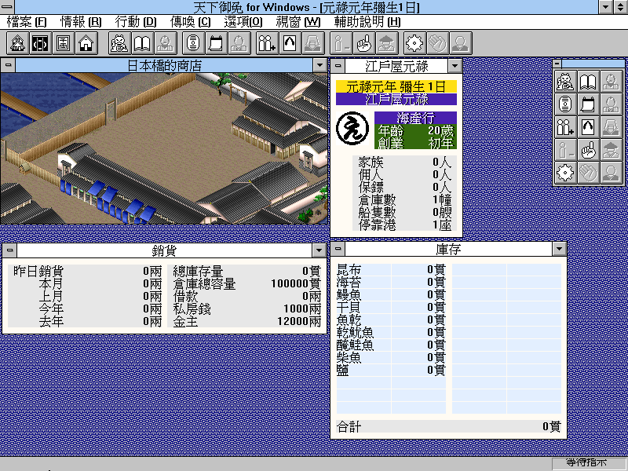

名稱：天下御免 (中文版)
簡介：Artdink 1994年出品的商店經營模擬遊戲，1995年移植至Win31，1997年由第三波中文
化並代理發行 [待補]。

保護：光碟
備註：遊戲程式為16位元，只能在Win31/9x/XP系統上執行。
備註：建議在Win31上執行，字體較為正常。Win9x以上系統執行時，若遊戲裡文字過小看不
清，可到桌面按滑鼠右鍵，選[內容]-[設定值]-[進階]，將DPI設定改成大(120DPI)。
檔案：ad0918.rar = 更新檔